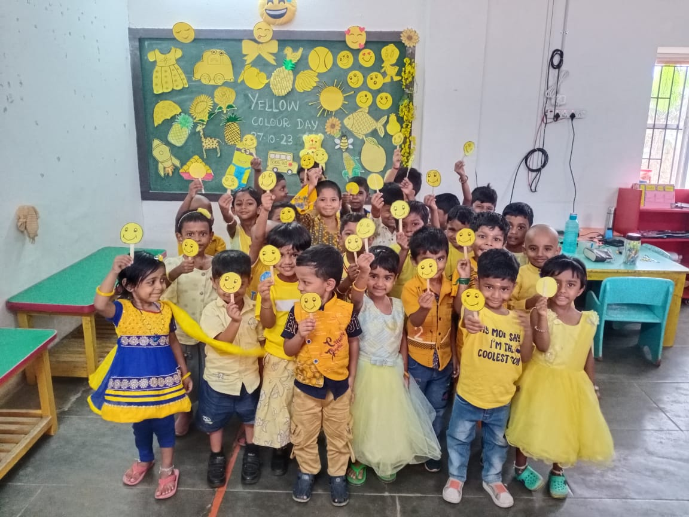

Welcome to Our School
Sri Narayana Matriculation Higher Secondary School, Pooluvapatti (SN School) is run and managed by JJF Trust. The Trust has eminent educationalists and professionals on their Board and supports schools across India.
SN School is located in the agrarian centric village of Pooluvapatti in Coimbatore District and runs classes from LKG to Class 12.
The school is situated on ninety-five thousand square feet of land and has over twenty thousand square feet of built-up area which includes twenty Class rooms, a Library, three Science laboratories, a computer laboratory, an ATAL laboratory and a Mathematics laboratory.
The school aims at bringing out the best in each child and help them develop as responsible citizens of this country.
More About Us
